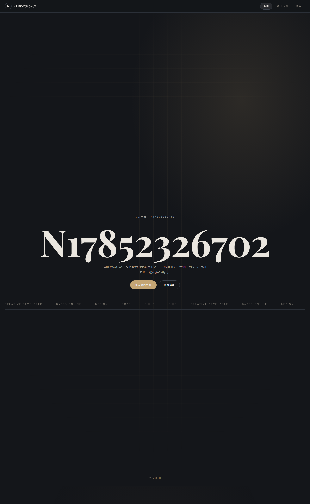
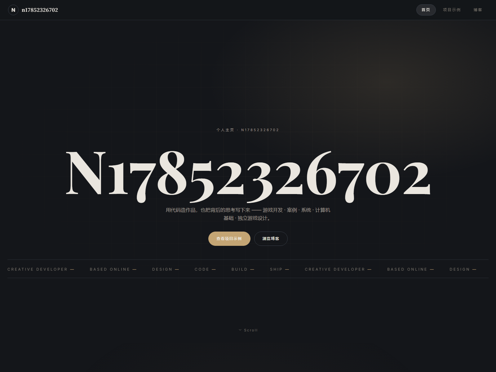
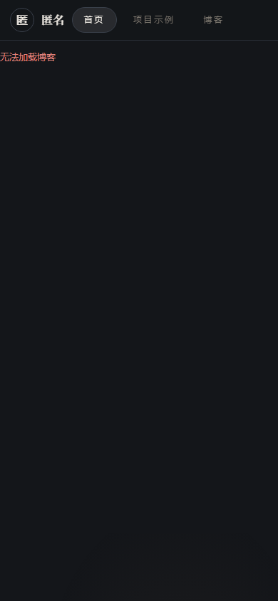

你要的「宠物」我做了，而且做成了可交互的行为实验室。 但我先把诊断说清楚：这个页面最大的问题不是「不够花」，是「没有人」。 宠物是解决这件事最显眼的装置，不是唯一的。
线上 heyuan-cyber.github.io/webbook/blog/u/… 实拍。这位作者有 2 篇公开文、没有配过 site config。

N17852326702 —— 页面上最大的一个字，却是个手机号段

| 缺什么 | 证据 | 本轮怎么补 |
|---|---|---|
| 不知道这是谁 | 词标 nameFromEmail(ownerEmail) → N17852326702。全页没有一处真名、头像、在做什么 |
② 活的词标 + ④「现在在折腾」 |
| 不知道还在不在更新 | 没有任何时间信号。唯一能判断的方式是逐个点开文章看日期 | ③ 站点脉搏（60 天方格） |
| 没有人味 | 整页是「作品集说明书」的语气：hero 是一句通用文案「用代码造作品，也把背后的思考写下来」，marquee 是六个英文词，footer 是「一起做点东西。」 | ① 宠物 + ⑤ 彩蛋 + ⑥ 领路 + ⑦ 访客留痕 |
刻意不做：跟随光标、自动走动、发声提醒。 想感受区别，去实验室把「跟随光标」打开。
displayName）。posts[].updatedAt，零新字段。now）。空着就不渲染。可切换 4 个物种、逐条开关行为、播放 28 秒行为脚本、看事件日志。 里面专门放了一个 「跟随光标」的反面对照开关 —— 打开就知道为什么不该做。
把七个装置放进真实版式（满屏 hero + 单列滚动 + 区块卡片），宠物贴在右下角，鼠标移过去它会看你。
| 来源 | 拿走了什么 | 丢掉了什么 |
|---|---|---|
| page-mascot 「看着光标、戳一下会眨眼」 |
「看着你」这个核心动作 —— 但改成只在领地内转头，不是全程跟随 | 它的实现是持续跟随光标，这正是我认为最该克制的部分 |
| Monkeytype 的猫 | 「陪伴但不索取」的调性：它跟着你的节奏动，但从不拦你 | 它绑定打字节奏，个人主页没有这个输入源 |
| Duolingo 的猫头鹰 公认的反面教材 |
反面对照：证明了「会催你的吉祥物最终会被讨厌」 | 所有通知 / 提醒 / 情绪绑架式的机制，一条都不抄 |
| 博客桌面宠物 中文博客圈的常见做法 |
「宠物是站主性格的一部分」这个定位；物种可选的思路 | 常见的实现是加载 Live2D / 大体积模型 —— 与项目的体积约束冲突 |
项目自己：guestPersona.ts |
早就内置了 10 个动物（企鹅 / 鲸鱼 / 狐狸 / 熊猫 / 海豚 / 猫头鹰 / 考拉 / 小鹿 / 水獭 / 云雀）+ 10 个形容词。宠物的物种词汇表不用新造，直接复用 | 它是「访客」的身份而不是「站主」的 —— 这一点不要混（见下面的待拍板） |
这决定它出现在哪些页面、以及配置写在哪。
A 最省事也最合直觉；B 有意思但会让人分不清「这是谁的宠物」；C 最丰富但这一轮先不做。
七个装置成本不同，可以只挑一部分。
我的建议：L1 起步。②③ 成本极低、立刻解决「这是谁 / 还在更新吗」，① 是你要的那个亮点。L2/L3 作为第二轮。
个人主页是「给别人看的地方」，笔记本是「自己干活的地方」—— 两处对宠物的容忍度完全不同。
我倾向 A：写作时需要绝对安静，这一条在第二轮「静」那版里已经论证过。
这一轮同样没有改任何产品代码。产物在 docs/design/round5/，现状实拍在 _now/。
顺带记录：个人主页的词标用邮箱前缀、以及 一位作者的 feed 返回空（前两轮已记录，仍未修）—— 详见 site.html 末尾。